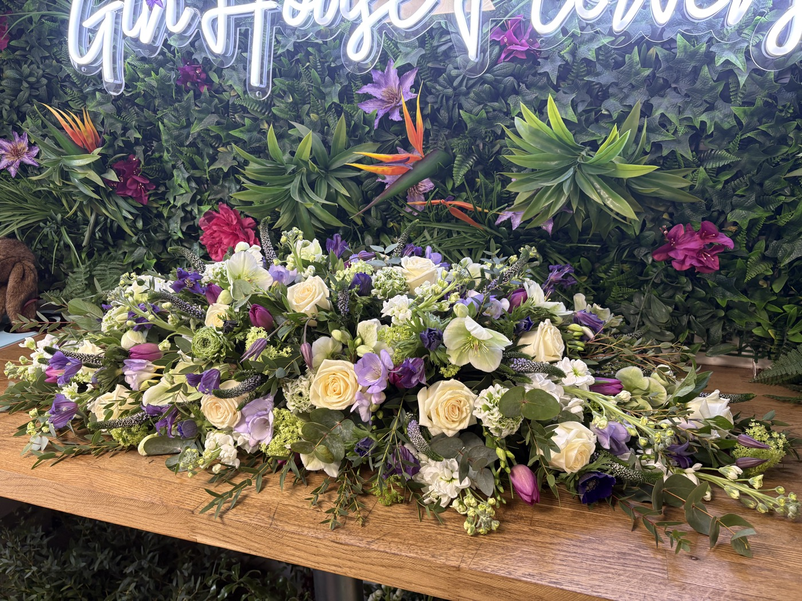

Coffin sprays
A traditional and striking way to dress the coffin, made in your choice of colours with the flowers your loved one would have liked. Available single or double ended.
Funeral flowers
Personal funeral flowers from our shop in Histon. We take the time to understand who you are remembering, then create a tribute that feels right for them.

From simple, classic arrangements to bespoke and unusual pieces, we design each tribute around the person you are saying goodbye to.
Whether you would prefer to call, email or visit us in the shop, we are here to support you. We keep the process as simple as possible and talk you through the options at a pace that suits you.
How to order
To get started, all we need are three details. We guide you through the rest.
So we can label the tribute and make sure it reaches the right service.
So we can plan your flowers in good time for the day.
Their name and address, so we can arrange delivery with them directly.
Take as long as you need. We will look after the rest.
Tributes
Every tribute is made by hand in your choice of colours and flowers, or in a seasonal mix chosen by our florists.

Sympathy flowers
A thoughtful bouquet or hat box arrangement lets someone know you are thinking of them. Order online for collection or delivery within 10 miles of Histon, and include a personal message with your flowers.
Need them today? Call us on 01223 656670 and we will do our best to help.
Order sympathy flowersGallery
Questions
If you would rather talk it through, call us on 01223 656670.
Please contact us as soon as you know the date of the service. The more notice you give us, the more choice you have, and we will always do our best to help with shorter timescales.
Yes. Give us the name and address of your funeral director and we will arrange delivery with them.
Of course. Tell us their favourite colours or flowers and we will build the design around them, or we can create a seasonal mix for you.
Yes. Our tied sheaves can be finished with raffia, which is ideal for natural burial sites.
You are very welcome to visit us at 11 High Street, Histon, Tuesday–Friday 9:30am–5pm and Saturday 9am–1pm.
Speak to us
Call us, visit the shop, or send a few details using this form and we will get back to you to talk through the options.